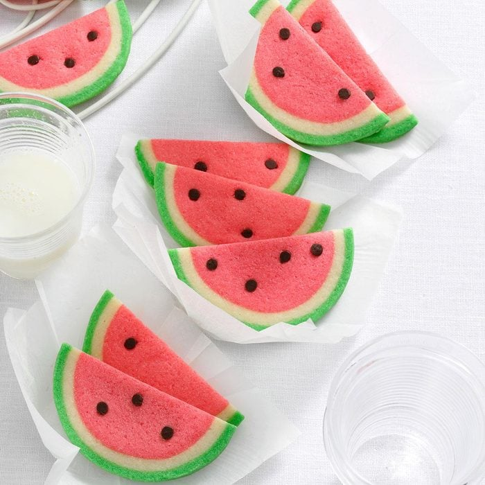

Watermelon Slice Butter Cookies

Description
These mouth-watering watermelon slice butter cookies are a sure fun treat for any
occasion. The bright colors are fun and pleasing to look at, and who doesn't love
cookies?
This recipe is a contest winner! It takes 25 minutes to prepare, 2 hours to
chill, and 10 minutes to bake per batch (makes about 3 dozen cookies).
Ingredients
- 3/4 cup butter, softened
- 3/4 cup sugar
- 1 large egg, room temperature
- 1/2 teaspoon almond extract
- 2 cups all-purpose flour
- 1/4 teaspoon baking powder
- 1/8 teaspoon salt
- red and green gel food coloring
- 1/3 cup miniature semisweet chocolate chips or raisins, chopped
- 1 teaspoon sesame seeds, optional
Steps
- In a large bowl, cream butter and sugar until light and fluffy.
Beat in egg and extract. In another bowl, whisk flour, baking powder
and salt; gradually beat into creamed mixture. Reserve 1 cup dough.
- Tint remaining dough red; shape into a 3-1/2-in.-long roll and wrap.
Tint 1/3 cup of reserved dough green; wrap. Wrap remaining plain
dough. Refrigerate 2 hours or until firm.
- On a lightly floured surface, roll plain dough into an
8-1/2x3-1/2-in. rectangle. Unwrap red dough and place on a
short end of the plain dough; roll up.
- Roll green dough into a 10x3-1/2-in. rectangle. Place red
and plain roll on a short end of the green dough; roll up.
Wrap and refrigerate overnight.
- Preheat oven to 350°. Unwrap and cut dough into 3/16-in.
slices (just less than 1/4 in.). Place 2 in. apart on ungreased
baking sheets. Lightly press chocolate chips and, if desired,
sesame seeds into red dough to resemble watermelon seeds.
- Bake 9-11 minutes or until firm. Immediately cut cookies
in half. Remove to wire racks to cool.
Nutrition Facts
1 cookie: 82 calories, 4g fat (2g saturated fat), 16mg cholesterol,
52mg sodium, 11g carbohydrate (5g sugars, 0 fiber), 1g protein.